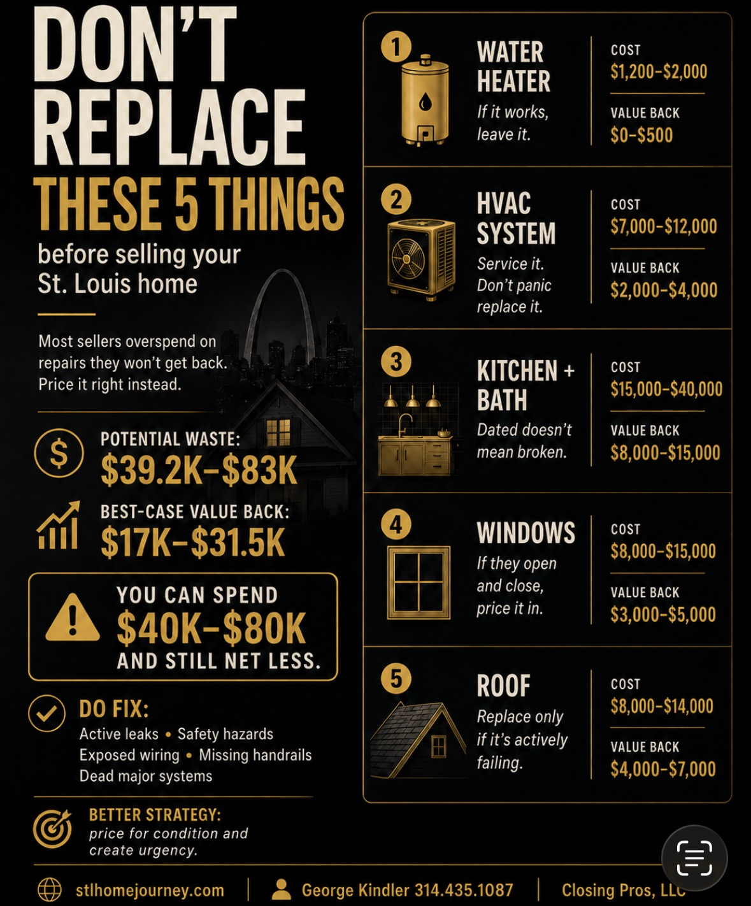

STL Home Journey
George Kindler
13 Years Experience At Your Fingertips
I lost a seller $50,000. Not because their home had problems. Because it was too perfect—and we priced it like the comps said we should.
The home was immaculate. New roof, new HVAC, updated kitchen, fresh paint. Every box checked. We priced it at $425K based on sold comps in the neighborhood. It sat for 63 days. We dropped to $415K. Then $405K. It finally sold at $395K.
Meanwhile, a comparable home three blocks away—original systems, dated finishes, no updates—listed at $365K. Under contract in 4 days. Sold at $380K after multiple offers. Buyers waived inspection to win.
Same neighborhood. Same square footage. The "worse" home netted the seller more money in 1/15th the time.
That's when I learned: condition matters less than price.
Most St. Louis sellers think they have two options: fix everything first, or sell to a cash buyer for 60-70% of value. There's a third option that nets more than both: price where buyers expect your home to be for its condition, and let them compete.
Before we talk about the pricing strategy that actually works, let's look at the repairs that don't move the needle—no matter what your agent tells you.

Cost: $1,200-2,000 | Value Added: $0-500
Buyers assume every water heater is old and budget for replacement anyway. A new one doesn't increase your sale price—it just becomes expected. If yours works, leave it.
Cost: $7,000-12,000 | Value Added: $2,000-4,000
Unless your system is completely non-functional, don't replace it. Service it, get a clean inspection report, and move on. Buyers in St. Louis know HVAC eventually needs replacement—they're not paying a premium for a new one.
Cost: $15,000-40,000 | Value Added: $8,000-15,000
Dated doesn't mean broken. If your kitchen is from 1995 but functional, price it accordingly. Buyers who want updates will do them their way. You'll never recoup a full renovation at closing.
Cost: $8,000-15,000 | Value Added: $3,000-5,000
If your windows open, close, and aren't visibly rotting, leave them. Single-pane windows in South St. Louis are standard in older homes. Buyers know what they're getting.
Cost: $8,000-14,000 | Value Added: $4,000-7,000
Only replace a roof if it's actively leaking or failing inspection. A 15-year-old roof with 5-10 years left? Disclose its age and move on. Buyers will negotiate $3-4K off for a future roof—not the full $10K replacement cost you'd pay upfront.
Total potential waste: $39,200 - $83,000
Total value added to sale price: $17,000 - $31,500 at best
You're spending $40-80K hoping to net an extra $20-30K. And that's if your home sells at asking price. Most don't.
Here's what actually happens when you sink $25K into repairs before listing:
You list at $245K (your agent says comps support it)
Buyers see it at $245K and think: "That's expensive for a home with original systems... I'll check out the other listings first."
They don't know you just spent $25K. They're comparing you to active inventory, not your renovation receipts.
Meanwhile, the home down the street with the same original systems lists at $225K. Buyers think: "Wait, that's $20K less than everything else—I need to see that one immediately."
Your renovated home sits. The "worse" home goes under contract in 3 days with multiple offers, selling at $235K.
You net less. After agent fees and your $25K in repairs, you walk away with $207K. The "unrenovated" seller walks away with $214K—$7,000 more, in 1/10th the time.
Buyers mentally deduct repair costs from your asking price—and they always overestimate. That $8,000 roof? They're thinking $12,000. Here's what it actually costs to sell in St. Louis when you factor in negotiation penalties from sitting on market.
Here's what I do differently than every other agent in St. Louis:
Most agents pull sold prices. "Your neighbor sold for $242K, so let's list at $245K."
I don't care what homes sold for. I care about what price made buyers drop everything to write an offer in the first 72 hours.
Homes that went from Active to Under Contract in 3 days or less.
Not homes that sat for 45 days and eventually closed at asking. Not homes that got offers after two price drops. Homes where the listing hit MLS on Thursday, buyers scrambled to see it Friday and Saturday, and by Sunday night there were multiple offers on the table.
That's the price point that triggers urgency.
When a buyer sees a home priced where they KNOW it won't last, they don't add it to their list. They don't compare it to five other properties. They leave work early. They cancel plans. They text their agent: "Get me in TODAY."
Those are the buyers you want—the ones who recognize value immediately and move fast because they're terrified someone else will get there first.
Step 1: Forget sold prices. Look at LIST prices.
Pull homes similar to yours in condition. Not square footage, not neighborhood averages—CONDITION. Same age systems, same cosmetic updates (or lack thereof), same level of deferred maintenance.
Step 2: Filter by days to contract.
Which ones went Active → Under Contract in 3 days?
If a home listed at $228K on a Thursday and had a signed contract by Sunday, that's your data point. THAT price triggered the "drop everything and go see it" response.
If a home listed at $242K and sat for 40 days before going under contract at $235K after two price drops, ignore it. That's not urgency. That's exhaustion.
Step 3: Price at the "drop everything" threshold.
If homes in your condition that went under contract in 3 days were listed at $225K-230K, that's your range. List at $228K.
Not $240K hoping for the best. Not $235K trying to split the difference. $228K—the price that made buyers scramble.
Home A:
Listed: $245,000 | Days on market: 47 | Price drops: 2 ($239K → $232K) | Sold: $229,000 | Under contract after 47 days
Home B:
Listed: $228,000 | Days on market: 3 | Price drops: 0 | Sold: $237,000 (9 offers) | Under contract after 3 days
Every agent in St. Louis pulled Home A as a comp and told the next seller, "Homes are selling for $229K in your area."
I pulled Home B and said, "Homes that LIST at $228K are selling for $237K in 72 hours."
Home B's seller netted $8,000 MORE and avoided 6 weeks of showings, open houses, and stress.
These are the buyers you want:
Not the ones touring 12 homes over three weekends, making spreadsheets, waiting for the perfect moment.
You want the buyers who:
What triggers that response?
Price. Not "low price"—the RIGHT price. The price where a buyer who's been watching the market for two months says:
"Wait. That house is only $228K? That's $15K less than everything else I've seen. Something must be wrong with it... let me see it immediately before someone else figures out it's actually a deal."
Then they see it. It's not a deal because something's wrong. It's a deal because you priced it correctly for condition while everyone else is pricing based on sold comps from homes in better condition.
They write a strong offer. They don't negotiate. They win at $235K.
You just netted more than you would have at $245K with zero showings.
"I don't look at what homes sold for. I look at what price made buyers leave work early to write an offer in 48 hours. That's your number."
— George Kindler, 250+ St. Louis transactionsHere's the part most sellers don't understand:
When your home is priced right and you have multiple offers in 3 days, buyers waive inspection to win.
Not because they're reckless. Because they know:
Compare that to sitting on market for 6 weeks at $245K:
Meanwhile, the competitively-priced home:
Same net proceeds. 1/7th the time. No inspection negotiation.
Here's what the average price reduction looks like after inspection in St. Louis when buyers have leverage. Spoiler: it's more than you think.
When your $240K home sits for 45 days because you priced it at $248K hoping to recoup repair costs, cash buyers start circling.
They'll offer $165K and say "no repairs, quick close, no hassle."
Here's how cash buyers actually calculate their offers and what you lose when you accept.
The "no hassle" pitch sounds good after your home has sat for weeks. But if you'd priced it competitively from day one, you'd have been under contract in 72 hours at a higher net to you.
My Cash Offer Decoder shows you the math: A cash offer at 65% of value vs. competitive market pricing at 98-102% of value.
Most sellers are shocked to see the $40-60K difference in net proceeds between selling to a cash buyer vs. pricing competitively for the open market.
I'm not saying skip all repairs. I'm saying skip the expensive ones that don't move the needle.
DO fix these (they kill deals or create liability):
Everything else? Price it in.
Learn more about which repairs actually affect your offer price in St. Louis.
Let's compare three strategies for a South County home that needs $20K in deferred maintenance (roof, HVAC, cosmetic updates):
| Strategy | Upfront Cost | Days to Contract | Sale Price | Net to Seller |
|---|---|---|---|---|
| Fix Everything First | $22,000 | 42 days | $238,000 | $204,500 |
| Sell to Cash Buyer | $0 | 10 days | $160,000 | $156,000 |
| Competitive Pricing | $0 | 3 days | $242,000 | $220,500 |
Strategy 1: Spend $22K on repairs, list at $245K hoping to recoup costs. Sit for 6 weeks. Drop to $238K. Accept $238K with $8K in inspection credits. Net $204,500 after fees.
Strategy 2: Panic after 45 days. Call cash buyer. Accept $160K "as-is, quick close." Net $156K.
Strategy 3: Price at $228K where buyers expect it for condition. List Thursday. 11 showings by Saturday. 5 offers by Monday. Accept $242K (highest offer, inspection waived). Close in 18 days. Net $220,500.
Competitive pricing nets $16,000 more than fixing everything, and $64,500 more than selling to a cash buyer.
This is why I built the Cash Offer Decoder. Run your numbers here and see what you're actually walking away with under each scenario.
Your agent will pull comps and say: "Homes in your area sold for $235-245K in the last 90 days."
What they don't show you:
Comps look backward. Buyers look at TODAY.
If you list based on closed sales from 60-90 days ago, you're pricing against ghosts. Buyers are comparing you to the live inventory they saw this morning.
Ask your agent: "What's actively listed right now in similar condition to mine? And which of those went under contract in 3 days?"
That's your pricing answer.
Most St. Louis sellers follow the same losing playbook:
Here's the better way:
Price where buyers expect your home to be for its condition, and they'll show up in droves.
Not comparing with other homes on a list. Dropping everything to get in the first 48 hours.
That's the difference between sitting and selling.
Most St. Louis sellers either overprice and sit, or panic-sell to cash buyers at 65% of value. There's a better way: competitive pricing that creates urgency and drives offers over asking.
This is one piece of the St. Louis home selling process.
📚 Complete Buyer & Seller Guide →If you're considering selling yourself, the Missouri FSBO guide walks through every step — pricing, disclosure requirements, MLS exposure, and negotiation — from an agent who's done 250+ transactions.

Grew up in South St. Louis, lived in Dogtown for 6 years, now in South County. You'll find us at White Flag Church on Sundays. This is my city, and I know it well.